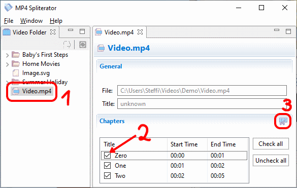
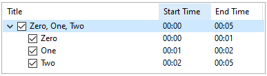
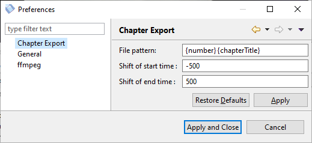

MP4 Spliterator
Erste Schritte
Vorausetzungen
Du brauchst zumindest Java 8 oder höher, um diese Anwendung auszuführen. Java kann von java.com heruntergeladen werden.
Installierung
Lade einfach die Anwendung herunter und extrahiere sie in einen Ordner deiner Wahl, dann klicke doppelt auf die EXE-Datei.
Eine der ersten Dinge, welche die Anwendung tut, ist ffmpeg herunterzuladen. Du kannst den Prozess beschleunigen, indem du es selbst herunterlädst und den Pfad der heruntergeladenen Datei im initialen Assistenten auswählst.
MP4 kapitelweise trennen

Ein MP4 in Kapitel zu trennen ist ein einfacher Prozess, der in wenigen Klicks durchgeführt werden kann:
- 1. a) Doppelt auf ein Video im klicken.
- 1. b) Oder ein Video direkt über das Menü auswählen.
- 2. Das Video öffnet sich in einem eigenen Bereich. Dort können die Kapitel an- oder abgehakt werden.
- 3. klicken und einen Ordner auswählen. Die Kapitel werden in diesen exportiert.
Kapitel trennen und zusammenführen
Möchte man eins oder mehrere Kapitel in einer Datei exportieren, kann man die Schaltfläche benutzen.
Die zusammengeführten Kapitel werden dann in einer gemeinsamen Gruppe dargestellt:

Um diesen Vorgang wieder rückgängig zu machen, gibt es die Schaltfläche .
Notiz: Um mehrere Videos auf einmal zu selektieren, kannst du Umschalt (fortlaufende Auswahl) oder STRG (einzelne Auswahl) benutzen.
Benutzervorgaben
Du kannst den Export der Kapitel über konfigurieren.

Die folgenden Einstellungen können verändert werden:
- Muster der Datei - das Muster der exportierten Kapiteldateien; nutzt die folgenden Platzhalter
- {number} - eine fortlaufende Nummer in der Reihenfolge der Kapitel
- {chapterTitle} - der Titel der Kapitel
- Verschiebung der Endzeit - wenn er ungleich null ist, ändert dieser Wert die Startzeit des Kapitels; z.B. ein Wert von -500 heißt das Kapitel wird 500ms vor der eigentlichen Startzeit getrennt
- Verschiebung der Startzeit - wenn er ungleich null ist, ändert dieser Wert die Endzeit des Kapitels; z.B. ein Wert von 700 heißt das Kapitel wird 700ms nach der eigentlichen Endzeit getrennt